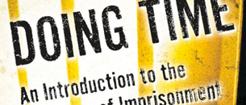

Books

Doing Time: An Introduction to the Sociology of Imprisonment. Second Edition
Macmillan: September 2009
Prostitution, Politics and Policy
Routledge: 2008
An Assessment of the Use and Impact of Anti-Social Behaviour Orders
Bristol: Policy Press 2007
Armed Robbery
Willan Press: Published March 2002
Edited Books
New Politics of Crime and Punishment
(ed. with J. Young) Willan Press, June 2003.
Prostitution
(with M. O’Neill). Ashgate, February 2003.
Crime, Disorder and Community Safety
(ed. with. J. Pitts) Routledge, June 2001.
Imprisonment
The International Library of Criminology, Criminal Justice and Penology. Ashgate, Autumn 1999.
Prisons 2000: An International Perspective on the Current State and Future of...
(with an introduction by Judge Stephen Tumim, edited with P. Francis). Macmillan Press, March 1996 .
Issues in Realist Criminology
(edited with J Young) Sage Publications, London 1992.
Rethinking Criminology
(edited with J Young) Sage Publications, London 1992.
Privatising Criminal Justice
(editor) Sage Publications, London 1989
Informal Justice?
(editor) Sage Publications, London 1988
Confronting Crime
(edited with J Young) Sage Publications, London1986
Papers
Research
Spanish publications
Biography
I am a Professor of Criminology and Director of Studies for the MA in Criminology at the University of Kent’s School of Social Policy, Sociology and Social Research.
My main research interests centre around issues of crime and punishment, with a particular focus on crime prevention and community safety on one hand and prisons and penal policy on the other.
Career
I was a Lecturer and Senior Lecturer in Criminology at Middlesex University between 1977 and 1990. I joined the University of Leicester as a Senior Lecturer from 1990 to 1993. From there I became a Reader and Professor of Criminology at Middlesex University between 1993 and 2004. Before joining SSPSSR, I was a Professor of Criminology at London South Bank University from 2004 to 2011.
Education
I completed my PhD at the University of Essex, my MA in Sociology/Criminology at the University of Sussex and a BA (Hons) in Social Science at Middlesex University.
Teaching
I completed my PhD at the University of Essex, my MA in Sociology/Criminology at the University of Sussex and a BA (Hons) in Social Science at Middlesex University.